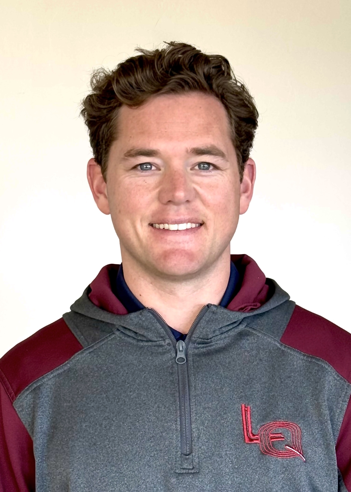

Recreational runners needed for a University of Brighton physiology study. Three supervised lab visits, with your results available on request.
Learn more →After your final visit, you can request a personalised summary of your testing results. This includes information that is difficult to measure accurately outside a sport and exercise science laboratory.
Running economy shows how efficiently you use oxygen while running at a controlled pace. It is an important marker of distance-running efficiency and cannot be measured accurately from a watch alone. Your running economy data will be available on request after your final visit.
Lactate threshold testing helps identify the speed and heart rate where blood lactate begins to rise more rapidly. This gives a clearer picture of how your body responds as running intensity increases. The test uses small fingertip blood samples taken during an incremental treadmill run.
Your aerobic threshold, also known as LT1, helps identify the upper end of your easier aerobic training range. This can be useful for understanding where steady endurance running sits for you. You can request individual feedback on your lactate and running economy data after your final visit.
You will visit the University of Brighton sport and exercise science laboratory three times. Each visit is supervised, structured, and explained clearly before you begin.
The first visit involves an incremental treadmill test. You will run at gradually increasing speeds, with each stage lasting 3 minutes. At the end of each stage, a small fingertip blood sample is taken to measure blood lactate. This allows us to identify your individual LT1 speed, which is then used for the running economy tests in Visits 2 and 3.
During the second visit, you will complete a standardised warm-up followed by a 10-minute treadmill run at your individual LT1 speed from Visit 1. Oxygen use and breathing responses are measured throughout the run. This is a steady, submaximal run rather than a maximal fitness test.
The third visit follows the same structure as Visit 2, but with a different warm-up beforehand. You will again run for 10 minutes at your individual LT1 speed. Comparing the two running economy tests allows us to examine whether the warm-up changes oxygen use and breathing responses during submaximal running.
Not sure? The screening form takes two minutes and we will confirm from there.
Complete the screening form →The Meads Sport and Exercise Science Labs are on the University of Brighton Falmer Campus — easy to reach by train, bus, or car.
Take any Southern service from Brighton station towards Lewes or Eastbourne. Get off at Falmer, one stop. From the platform exit, the Sport & Health Complex is a flat 5-minute walk along Village Way.
The 25 runs from Brighton city centre to Falmer. Check buses.co.uk for the current timetable. Alight at the Falmer campus stop on Village Way. The Sport & Health Complex is directly visible from there.
Enter via Village Way. Campus visitor parking is available. Parking passes will be arranged prior to your visit. Allow 10–15 minutes from central Brighton.
This study looks at whether a breathing- and posture-focused warm-up can influence running economy and breathing responses during submaximal treadmill running.
The diaphragm is involved in both breathing and trunk stability. During running, these demands happen at the same time: you need to breathe effectively while maintaining posture and control through repeated impact. The warm-up used in this study is designed to emphasise that breathing-postural connection before running.
We are interested in whether this type of warm-up changes oxygen use, breathing patterns, or heart-rate responses during a controlled 10-minute run at your individual LT1 speed.
By taking part, you contribute to research on warm-up strategies for recreational runners. After your final visit, you can also request individual feedback on your results, including your lactate threshold data and running economy.
No. You will be familiarised with the treadmill, breathing measurement equipment, and study procedures during Visit 1. Everything is explained before you start and all sessions are supervised.
The exercise involved is submaximal treadmill running — not a maximal test. There is a small risk of fatigue or breathlessness. Fingertip blood samples may cause brief discomfort but use sterile, single-use equipment. You may stop at any time. A health screening questionnaire is completed before testing begins.
You will be assigned a participant ID code so your name is not attached to your physiological data. All electronic data is stored on University OneDrive only. You may request withdrawal of your data up to 31 August 2026. After that point data will have been anonymised and incorporated into group-level analysis.

Supervisor: Dr Jake Butterworth
University of Brighton
J.Butterworth2@brighton.ac.uk
Testing will run until 31 July. Complete a short eligibility form to see whether the study is suitable for you. If eligible, you can book your first laboratory visit directly from the form.
Booking earlier is recommended so there is enough time to complete all three visits before testing closes. The form takes approximately two minutes to complete.
Register your interest →Questions first? Email A.Worden1@uni.brighton.ac.uk